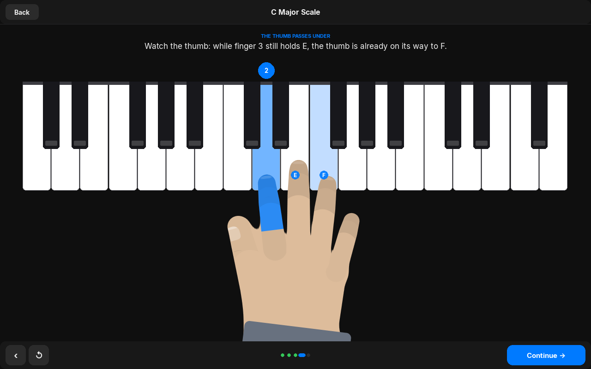
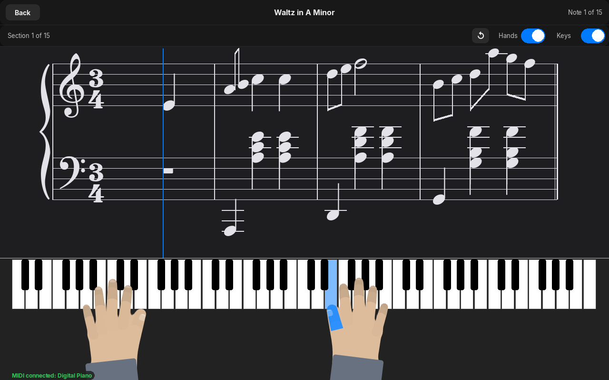
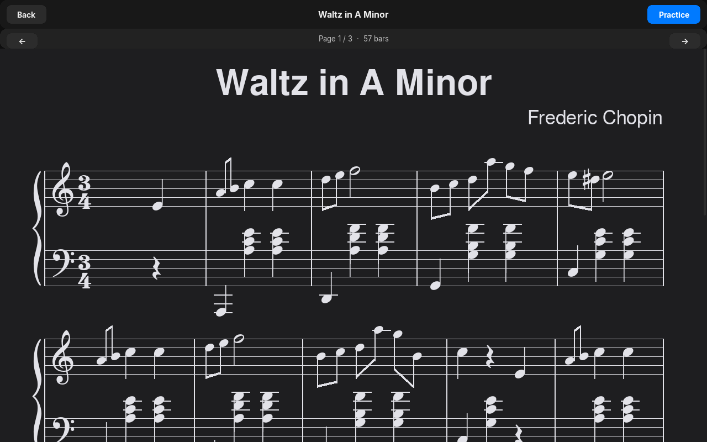
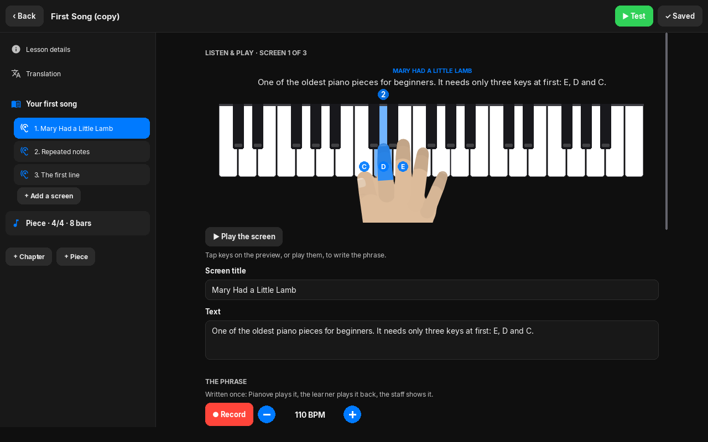

FSFE · Youth Hacking For Freedom 2026
Pianove
Free, open-source piano learning software. Lessons that explain with animated hands, any MusicXML piece turned into a step-by-step learning path, on a MIDI keyboard, an acoustic piano through the microphone, or just your computer keyboard. Fully offline, no account, no subscription.






